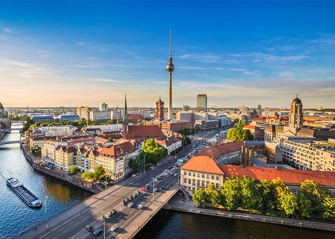
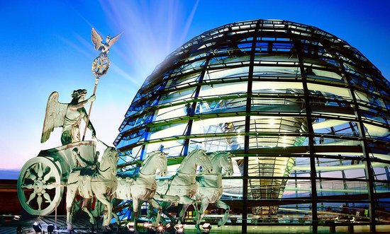
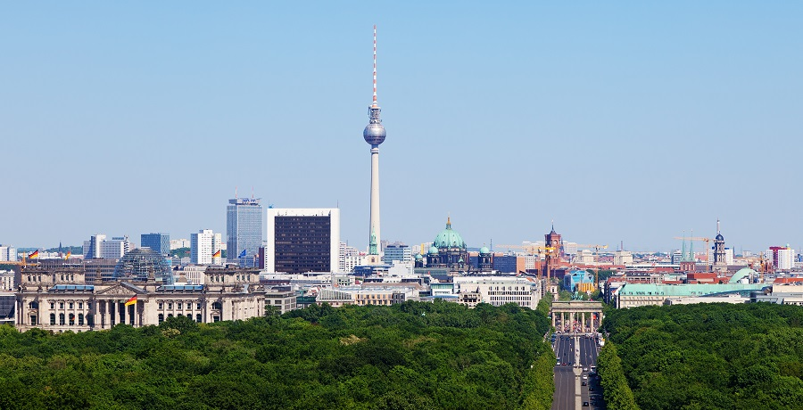
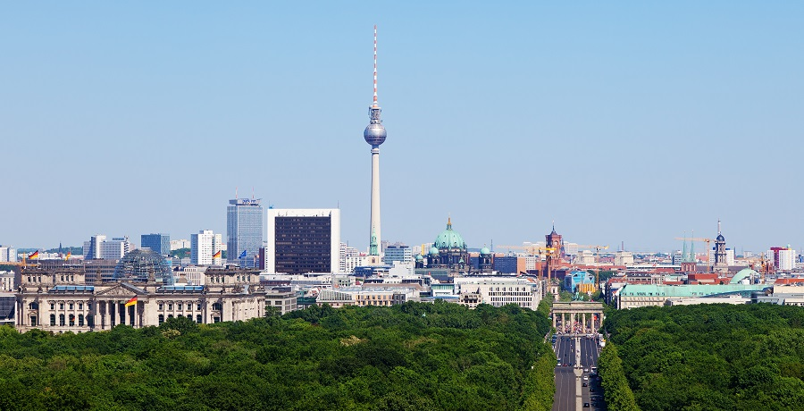

Berlin
Welcome to Berlin
Berlin's combo of glamour and grit is bound to mesmerise anyone keen to explore its vibrant culture, cutting-edge architecture, fabulous food, intense parties and tangible history.
When it comes to creativity, the sky’s the limit in Berlin, Europe's newest start-up capital. In the last 20 years, the city has become a giant lab of cultural experimentation thanks to an abundance of space, cheap rent and a free-wheeling spirit that nurtures and encourages new ideas. Top international performers grace its theatre, concert and opera stages; international art-world stars like Olafur Eliasson and Jonathan Meese make their home here; and Clooney and Hanks shoot blockbusters in the German capital. High-brow, low-brow and everything in between – there’s plenty of room for the full arc of cultural expression.
Berlin is a big multicultural metropolis but deep down it maintains the unpretentious charm of an international village. Locals follow the credo 'live and let live' and put greater emphasis on personal freedom and a creative lifestyle than on material wealth and status symbols. Cafes are jammed at all hours, drinking is a religious rite and clubs keep going until the wee hours or beyond. Size-wise, Berlin is pretty big but its key areas are wonderfully compact and easily navigated on foot, by bike or by using public transport.
Berlin is a bon vivant, passionately feasting on the smorgasbord of life, never taking things – or itself – too seriously. To me, this city is nothing short of addictive. It embraces me, inspires me, accepts me and makes me feel good about myself, the world and other people. I enjoy its iconic sights, its vast swathes of green, its sky bars and chic restaurants, but I love its gritty sides more. There's nothing static about Berlin: it's unpredictable, unpretentious and irresistible. And it loves you back – if you let it in. Bismarck and Marx, Einstein and Hitler, JFK and Bowie, they’ve all shaped – and been shaped by – Berlin, whose richly textured history stares you in the face at every turn. This is a city that staged a revolution, was headquartered by Nazis, bombed to bits, divided in two and finally reunited – and that was just in the 20th century! Walk along remnants of the Berlin Wall, marvel at the splendour of a Prussian palace, visit Checkpoint Charlie or stand in the very room where the Holocaust was planned. Berlin is like an endlessly fascinating 3D textbook where the past is very much present wherever you go.
Forget about New York – Berlin is the city that truly never sleeps. Sometimes it seems as though Berliners are the lotus eaters of Germany, people who love nothing more than a good time. The city's vast party spectrum caters for every taste, budget and age group. From tiny basement clubs to industrial techno temples, chestnut-canopied beer gardens to fancy cocktail caverns, saucy cabarets to ear-pleasing symphonies – Berlin delivers hot-stepping odysseys, and not just after dark and on weekends but pretty much 24/7. Pack your stamina!
Top experiences
-
Brandenburger Tor
A symbol of division during the Cold War, the landmark Brandenburg Gate now epitomises German reunification. Carl Gotthard Langhans found inspiration in Athens’ Acropolis for the elegant triumphal arch, completed in 1791 as the royal city gate. It stands sentinel over Pariser Platz, a harmoniously proportioned square once again framed by banks, a hotel and the US, British and French embassies, just as it was during its 19th-century heyday.
-
Gedenkstätte Berliner Mauer
For an insightful primer on the Berlin Wall, visit this outdoor memorial, which extends for 1.4km along Bernauer Strasse and integrates an original section of Wall, vestiges of the border installations and escape tunnels, a chapel and a monument. Multimedia stations, panels, excavations and a Documentation Centre provide context and explain what the border fortifications looked like and how they shaped the everyday lives of people on both sides of it. There's a great view from the centre's viewing platform.
-
Museumsinsel
Walk through ancient Babylon, meet an Egyptian queen, clamber up a Greek altar or be mesmerised by Monet's ethereal landscapes. Welcome to Museumsinsel (Museum Island), Berlin's most important treasure trove, spanning 6000 years' worth of art, artefacts, sculpture and architecture from Europe and beyond. Spread across five grand museums built between 1830 and 1930, the complex takes up the entire northern half of the little Spree Island where Berlin's settlement began in the 13th century.
-
Neues Museum
David Chipperfield's reconstruction of the bombed-out Neues Museum is now the residence of Queen Nefertiti, the showstopper of the Egyptian Museum, which also features mummies, sculptures and sarcophagi. Pride of place at the Museum of Pre- and Early History (in the same building) goes to Trojan antiquities, a Neanderthal skull and the 3000-year-old 'Berliner Goldhut', a golden conical hat. Skip the queue by buying your timed ticket online. Entry must be made during the designated 30-minute time slot.
-
Reichstag
It’s been burned, bombed, rebuilt, buttressed by the Wall, wrapped in fabric and finally turned into the modern home of the German parliament by Norman Foster: the 1894 Reichstag is indeed one of Berlin’s most iconic buildings. Its most distinctive feature, the glittering glass dome, is serviced by a lift and affords fabulous 360-degree city views. For guaranteed access, make free reservations online, otherwise try scoring tickets at the Reichstag Service Centre for the same or next day. Bring ID. At the top, pick up a free auto-activated audioguide to learn about the building, landmarks and the workings of parliament while following the ramp spiralling up around the dome’s mirror-clad central cone.
-
Pergamonmuseum
Opening a fascinating window on to the ancient world, this palatial three-wing complex unites a rich feast of classical sculpture and monumental architecture from Greece, Rome, Babylon and the Middle East, including the radiant-blue Ishtar Gate from Babylon, the Roman Market Gate of Miletus and the Caliph's Palace of Mshatta. Renovations put the namesake Pergamon Altar off limits until 2019. Budget at least two hours for this amazing place and be sure to pick up the free and excellent audioguide.
-
East Side Gallery
The year was 1989. After 28 years, the Berlin Wall, that grim and grey divider of humanity, finally met its maker. Most of it was quickly dismantled, but along Mühlenstrasse, paralleling the Spree, a 1.3km stretch became the East Side Gallery, the world’s largest open-air mural collection. In more than 100 paintings, dozens of international artists translated the era’s global euphoria and optimism into a mix of political statements, drug-induced musings and truly artistic visions.
-
Schloss Charlottenburg
Charlottenburg Palace is one of the few sites in Berlin that still reflects the one-time grandeur of the Hohenzollern clan that ruled the region from 1415 to 1918. Originally a petite summer retreat, it grew into an exquisite baroque pile with opulent private apartments, richly festooned festival halls, collections of precious porcelain and paintings by French 18th-century masters. It's lovely in fine weather when you can fold a stroll in the palace park into a day of peeking at royal treasures.
-
Fernsehturm
Germany's tallest structure, the TV Tower has been soaring 368m high since 1969 and is as iconic to Berlin as the Eiffel Tower is to Paris. On clear days, views are stunning from the panorama level at 203m or from the upstairs restaurant, which makes one revolution per hour. To shorten the wait, buy a timed ticket online.
-
Sammlung Boros
This Nazi-era bunker shelters one of Berlin's finest private contemporary art collections. Advertising guru Christian Boros acquired the behemoth in 2003 and converted it into a shining beacon of art. Book online (weeks, if not months, ahead!) to join a guided tour (also in English) of works by such hotshots as Wolfgang Tillmans, Olafur Eliasson and Ai Weiwei, and to pick up fascinating nuggets about the building's past incarnations.
Disover the beauty of Berlin
 

 
